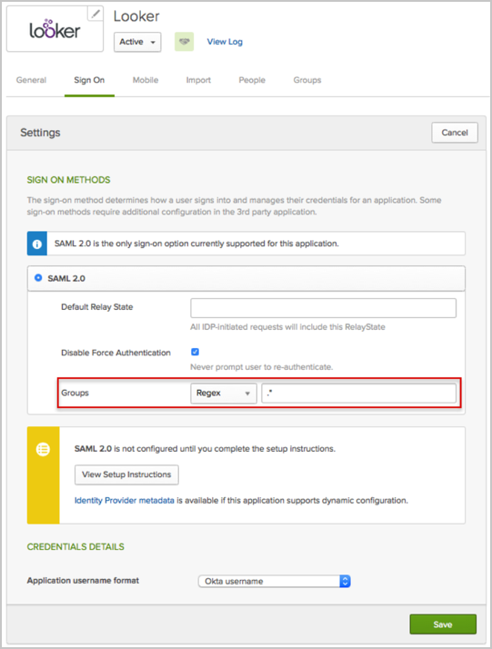
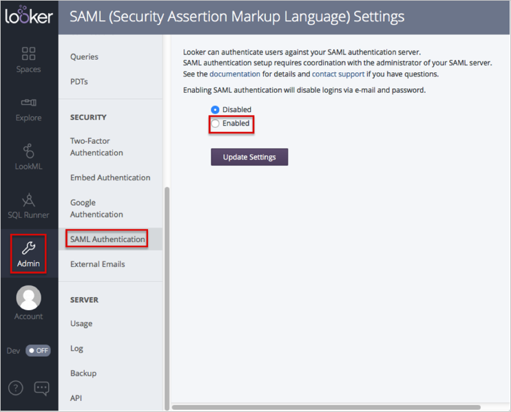
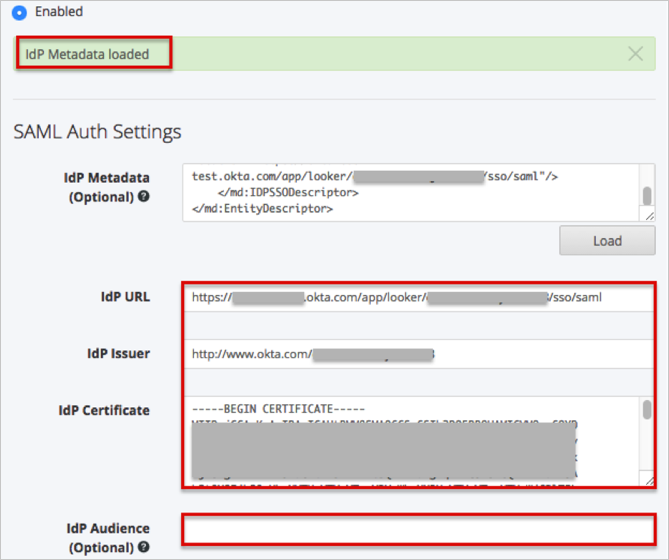
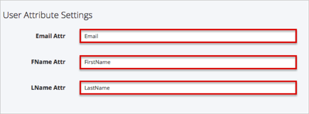
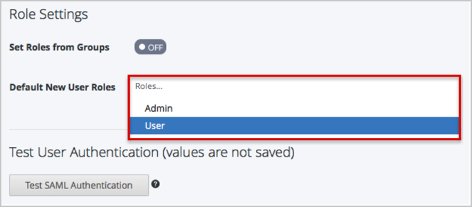
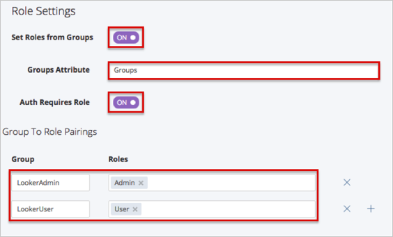
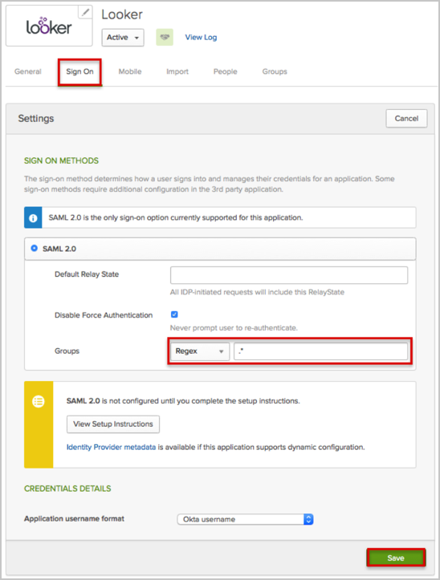
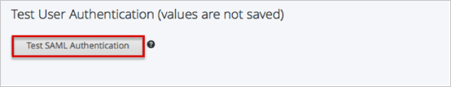
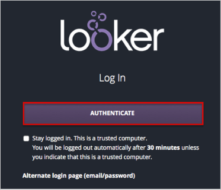

The Looker application is pre-configured to pass the Groups as part of the SAML assertion. In order to be able to send Groups, your Okta organization needs to have the following feature flag turned on:
Once this feature flag is turned on, make sure that the Group option is available for the application (Sign On tab):

Log in to Looker as Administrator.
Navigate to Admin > SAML Authentication
Select Enabled.

In the SAM Auth Settings section:
Copy and paste the following Admin > SAML Authentication into the corresponding field:
You can either use this metadata:
Sign in to Okta Admin app to have this variable generated for you.
Or this URL:
Sign into the Okta Admin dashboard to generate this value.
Click the Load button.

A IdP Metadata loaded message appears. The IdP URL, IdP Issuer, and IdP Certificate files should be filled.
Leave the IdP Audience (Optional) field empty.

In the User Attribute Settings section:
Email Attr: Enter Email.
FName Attr: Enter FirstName.
LName Attr: Enter LastName.

In the Role Settings section:
If you don’t need to set roles from groups, select Default New User Roles from the dropdown list.

If you need to set roles from groups:
Set the Set Roles from Groups switch to ON.
Groups Attribute: Enter Groups.
Set the Auth Requires Role switch to ON.
In the Group To Role Pairings Section:
You need to enter a group name that will be sent and then select a corresponding role in Looker.
For example: You can create LookerAdmin and LookerUser groups in OKTA for your Looker users. Then select Admin Role for the LookerAdmin group, and User Role for the LookerUser group in Looker.

In OKTA, select the Sign On tab for the Looker app, then click Edit.
Select your preferred Group filter from the dropdown list (the Regex rule with the value ".*" in order to send *all* groups to the Looker instance we used in our example).
Click Save.

In the Test User Authentication (values are not saved) section:
Click the Test SAML Authentication button.

A new window with Server response successfully validated message should appear.
Close the new window.
In the Migration Options section: Select the appropiate options.
Click Update Settings.

Done!
Notes:
IdP-initiated flows, SP-initiated flows, and Just In Time (JIT) provisioning are all supported.
For additional information please refer to to Looker-supplied detailed help, here: https://discourse.looker.com/t/saml-setup-instructions-release-3-26-with-group-to-role-mapping-3-32/1317
For SP-initiated flows:
Go to your login page at: [LookerBaseURL]/login.
Click the Authenticate button:
